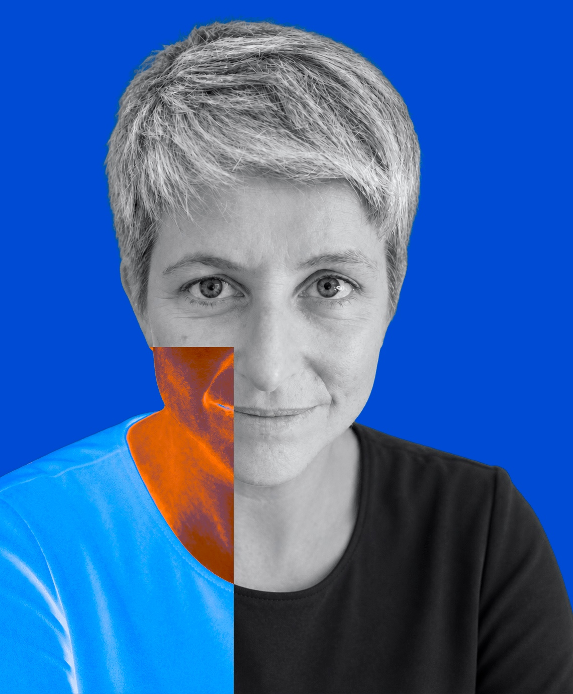
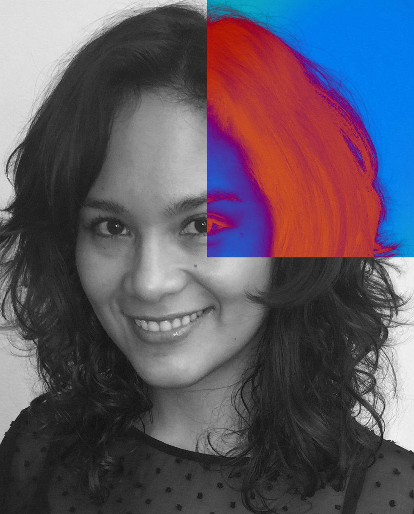
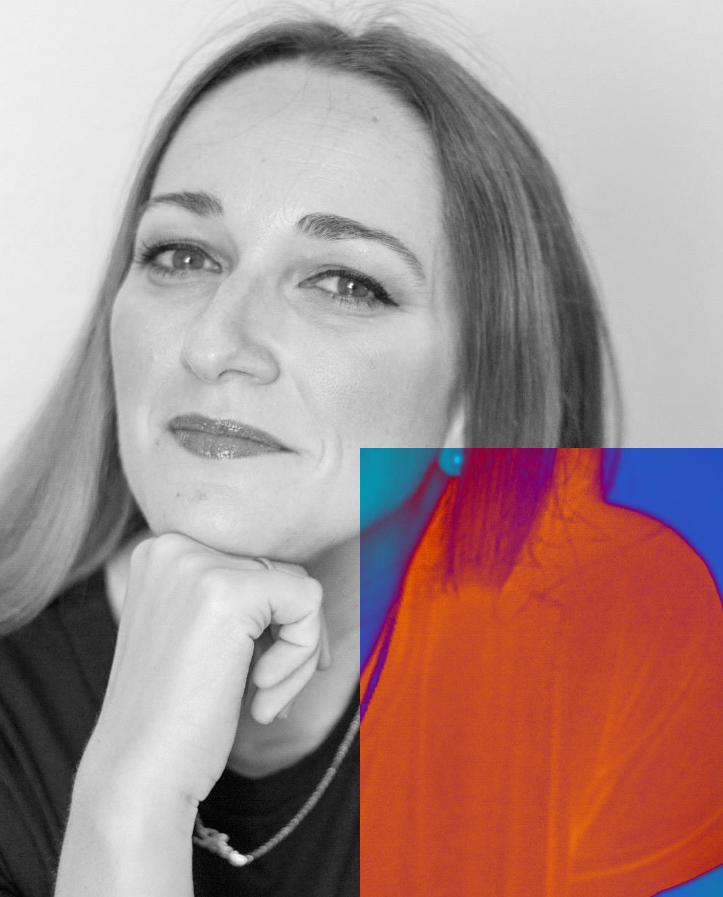
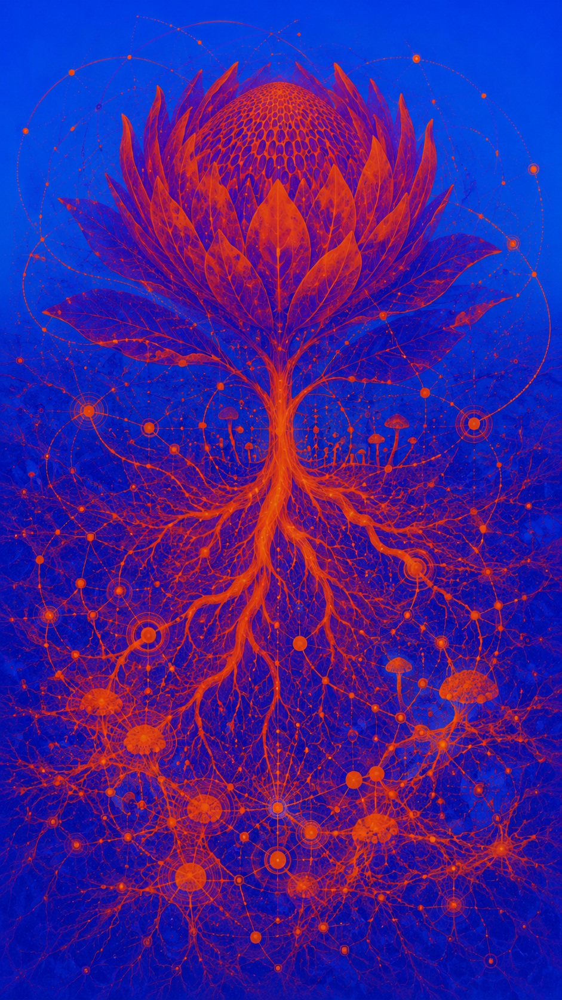
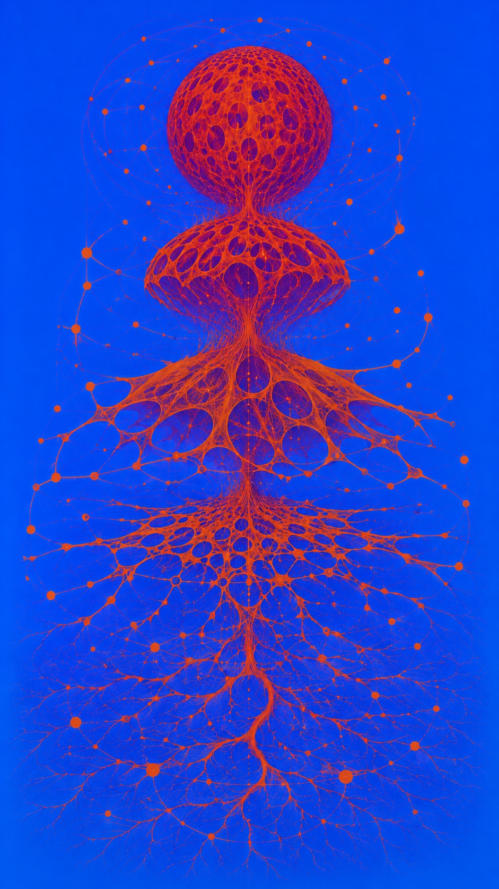
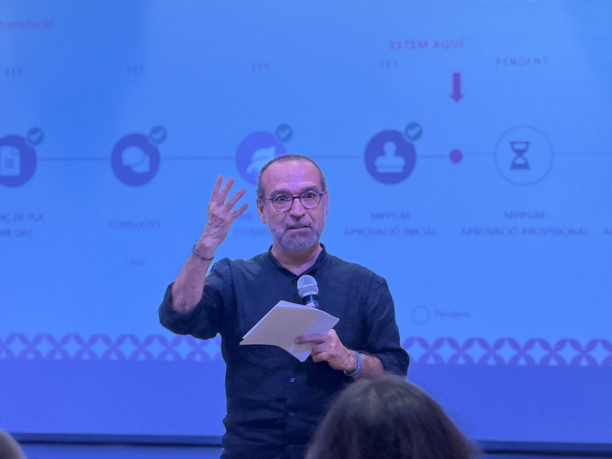

Marcelo Lasagna
Fundador y director de Protea · Complejidad, estrategia y adaptabilidad
LinkedIn ↗Adaptive Intelligence Agents
Ayudamos a las organizaciones a entender qué les impide adaptarse y a desarrollar capacidades para decidir y actuar en entornos complejos.
01 · Protea
Protea acompaña a organizaciones que necesitan comprender lo que cambia y responder con más criterio. Combinamos diagnóstico, entrenamiento y trabajo aplicado para convertir desafíos complejos en decisiones y capacidades.
Trabajamos con los equipos, no en su lugar. Cada proceso parte de una pregunta concreta: ¿qué impide avanzar hoy?
Conoce nuestra forma de trabajar →QUIÉNES SOMOS
Reunimos experiencia en estrategia, innovación, ciencias sociales, derecho, ingeniería, salud y aprendizaje. Formamos equipos según el desafío, combinando conocimiento especializado y trabajo con las personas de cada organización.
Protea surge del trabajo en transformación organizacional y de una pregunta que sigue vigente: ¿por qué unas organizaciones evolucionan y otras pierden capacidad de respuesta?
De esa experiencia nace Becoming Adaptive: un enfoque que conecta diagnóstico, desarrollo de capacidades, experimentación y aprendizaje sostenido.
EL EQUIPO
Fundador y director de Protea · Complejidad, estrategia y adaptabilidad
LinkedIn ↗
Consultora asociada · Derecho y transformación institucional
LinkedIn ↗Consultora asociada · Salud, transformación digital y sistemas complejos
LinkedIn ↗Consultor asociado · Ingeniería y filosofía de la ciencia
LinkedIn ↗
Consultora asociada · Derecho, gestión pública y modernización institucional
LinkedIn ↗
Consultora asociada · Talento, competencias y aprendizaje
LinkedIn ↗Una red de especialistas que se articula según las necesidades de cada proyecto.
Conversemos →02 · Qué hacemos
BECOMING ADAPTIVE
Becoming Adaptive conecta cuatro formas de trabajo: comprender la situación, entrenar capacidades, experimentar soluciones y sostener el aprendizaje.
No es un itinerario obligatorio: elegimos las herramientas según el problema real de cada organización.
Identificamos capacidades, bloqueos y prioridades en organizaciones y equipos. El IAO es uno de nuestros instrumentos principales.
La organización obtiene: una lectura estratégica compartida, prioridades claras y una hoja de ruta para actuar.
Conoce el IAO →Desarrollamos criterio y prácticas para tomar decisiones en condiciones de incertidumbre.
La organización obtiene: lenguaje compartido, nuevas prácticas y mayor autonomía para responder a los desafíos de transformación.
Programas: GYMNOS · Complexus · Innovation.

Diseñamos y probamos soluciones con los equipos sobre desafíos concretos, antes de extenderlas.
La organización obtiene: evidencia, decisiones defendibles y soluciones capaces de arraigarse.

Conectamos personas y conocimiento para que el aprendizaje continúe después del proyecto.
La organización obtiene: coordinación, memoria compartida y capacidad para continuar evolucionando.
Partimos por comprender el desafío. Luego decidimos qué herramientas aportan valor.
Explora un proyecto con Protea →03 · IAO
El Índice de Adaptabilidad Organizacional (IAO) permite identificar fortalezas, fricciones y prioridades de transformación. Una lectura para tomar decisiones, no solo para obtener un indicador.
Conoce cómo aplicar el IAO →¿Cuándo aporta valor? Cuando una estrategia no se traduce en acción, la innovación no se sostiene o las áreas responden de forma fragmentada.
QUÉ MIDE
Reconocer señales y prepararse para lo que emerge.
Responder con rapidez, coordinación y criterio.
Convertir la experiencia en conocimiento y nuevas capacidades.
Mantener vigente la propuesta de valor.
Fortalecerse y generar oportunidades ante la adversidad.
5 atributos · 21 variables
QUÉ ENTREGA
CÓMO SE APLICA
El IAO puede aplicarse en empresas, instituciones y equipos. Su alcance y lectura se definen según el problema que se necesita abordar. Forma parte de DIAGNOS.
04 · Conferencias

ADAPTIVE THINKING · MARCELO LASAGNA
Marcelo Lasagna acerca la complejidad y la adaptabilidad a las decisiones de quienes lideran organizaciones.
Una propuesta para congresos, equipos directivos y espacios de reflexión estratégica.
Invita a Marcelo →Explora las conferencias ↓CONFERENCIA INSIGNIA
El colapso comienza mucho antes de hacerse visible: cuando una organización deja de reconocer las señales y de aprender a tiempo.
A partir de su libro, Marcelo explora por qué el éxito puede generar rigidez y qué capacidades ayudan a mantener la vigencia.
Duración: 45–75 minutos, con conversación final. Dirigida a: equipos directivos, líderes, profesionales y organizaciones en transformación.
Consultar esta conferencia →OTRAS CONFERENCIAS
Cuando mejorar lo conocido impide ver lo que viene.
Decidir cuando cambian el tablero y las reglas.
Cinco capacidades para actuar ante la incertidumbre.
Cómo incorporar IA sin repetir prácticas que ya no funcionan.
Liderar con autonomía, criterio e inteligencia colectiva.
Distinguir la innovación real de sus rituales.
FORMATOS
Audiencias amplias · 45–75 minutos · Exposición y conversación final.
Equipos directivos y grupos profesionales · 2–4 horas · Exposición, diálogo y aplicación.
Consejos y equipos directivos · Grupos reducidos · 90–180 minutos · Desafío específico.
Cada formato se ajusta al tipo de audiencia y a la conversación que se quiere abrir.
Fundador de Protea y autor de ¿Por qué colapsan las organizaciones? Candidato a doctor en Ciencias Políticas, máster en Estudios Internacionales y especialista en filosofía de la ciencia y sistemas complejos. Más de treinta años acompañando procesos de transformación, innovación y aprendizaje en España y América Latina.
Fue profesor de la Universitat Pompeu Fabra durante doce años y ha trabajado con más de cincuenta organizaciones.
REFERENCIAS
Opiniones sobre la obra de Marcelo.
Cuéntanos el tema, la audiencia y el formato.
Invita a Marcelo →05 · Actualidad
Un espacio para consultar y compartir lo que investigamos, discutimos y aprendemos trabajando con organizaciones.
Análisis e ideas sobre adaptabilidad, complejidad y liderazgo.
Encuentros y presentaciones del equipo.
Actividades y novedades de Protea.
Conversaciones y apariciones en medios.
06 · Experiencia
El equipo de Protea ha trabajado con empresas, instituciones públicas, universidades y ecosistemas de innovación en España y América Latina.
En América Latina, esta trayectoria incluye el trabajo desarrollado a través de Lead To Change Chile.
ORGANIZACIONES Y TRAYECTORIA
Selección de organizaciones vinculadas a la trayectoria del equipo. Se conservan las identidades gráficas facilitadas por Marcelo, incluidas las históricas.
Contacto Protea
Descríbenos brevemente el contexto y veremos cómo podemos ayudarte.